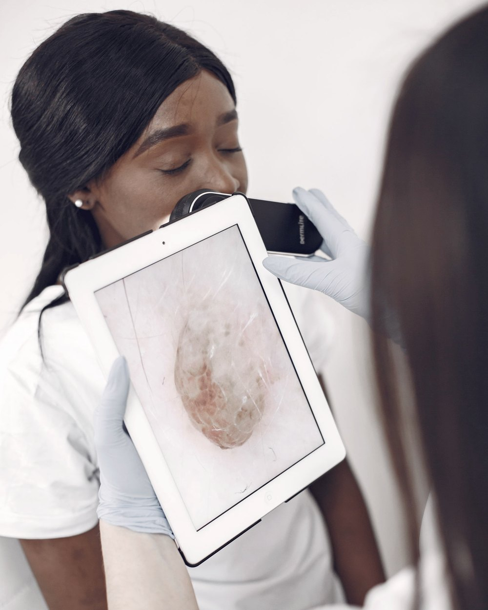
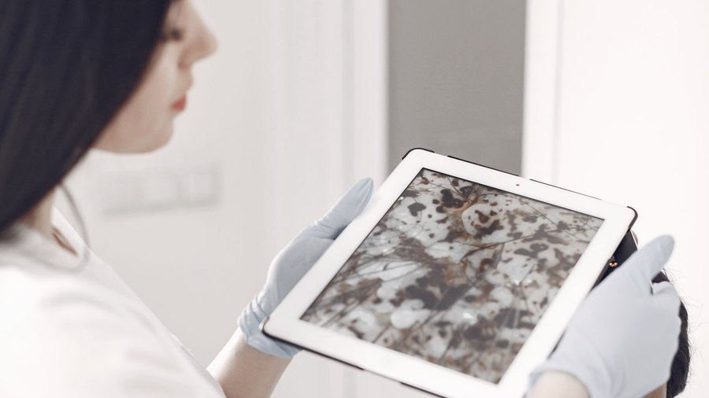
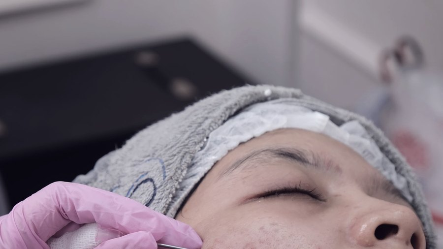

Shopping Millennium · Torre médica · Manaus — AM
Cuidar da pele unindo ciência e tecnologia. A consulta começa pelo diagnóstico médico, não pelo procedimento.

A trajetória
Formação médica na Universidade Federal do Amazonas.
Residência médica na instituição de referência em dermatologia do Amazonas.
Formação internacional em procedimentos estéticos avançados.
Titulação do Colegio Ibero Latinoamericano de Dermatología na área de tricologia: o estudo do cabelo e do couro cabeludo. É a credencial que sustenta a especialidade em queda de cabelo.
Ensina na residência da UFAM e da Fundação Alfredo da Matta — as mesmas instituições onde se formou.
Duas frentes

Frente clínica
Consulta médica com diagnóstico, conduta e acompanhamento — a base de tudo o que se faz depois.

Frente estética
Procedimentos indicados a partir da consulta, com equipamentos nomeados e protocolo definido caso a caso.
Equipamentos
Equipamento de ultrassom microfocado, usado em protocolos de firmeza da pele.
Plataforma de laser com diferentes aplicações dermatológicas, definidas na consulta.
Microagulhamento robótico, com controle de profundidade e uniformidade de aplicação.
A indicação de qualquer aparelho depende da avaliação médica individual. Resultados variam de pessoa para pessoa.
A especialidade declarada
Queda de cabelo é um sintoma, não um diagnóstico — e a investigação é médica. A diplomatura em Tricologia pelo CILAD é a formação específica nessa área, e é raro encontrá-la em Manaus.
"Cuido da sua pele com equilíbrio, unindo ciência e tecnologia."
A consulta de tricologia inclui avaliação do couro cabeludo, investigação das causas e definição da conduta.
Contato
Mande uma mensagem dizendo o motivo da consulta — pele, cabelo ou procedimento estético. A secretaria retorna com os horários disponíveis.
Como chegar